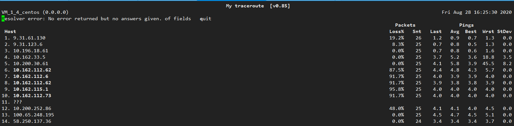

# ip addr show 1: lo: <LOOPBACK,UP,LOWER_UP> mtu 65536 qdisc noqueue state UNKNOWN group default qlen 1000 link/loopback 00:00:00:00:00:00 brd 00:00:00:00:00:00 inet 127.0.0.1/8 scope host lo valid_lft forever preferred_lft forever inet6 ::1/128 scope host valid_lft forever preferred_lft forever 2: eth0: <BROADCAST,MULTICAST,UP,LOWER_UP> mtu 1500 qdisc mq state UP group default qlen 1000 link/ether 52:54:00:eb:2b:9b brd ff:ff:ff:ff:ff:ff inet 10.168.1.4/24 brd 10.168.1.255 scope global eth0 valid_lft forever preferred_lft forever inet6 fe80::5054:ff:feeb:2b9b/64 scope link valid_lft forever preferred_lft forever 3: eth1: <BROADCAST,MULTICAST,UP,LOWER_UP> mtu 1500 qdisc mq state UP group default qlen 1000 link/ether 20:90:6f:6a:7f:ae brd ff:ff:ff:ff:ff:ff inet6 fe80::2290:6fff:fe6a:7fae/64 scope link valid_lft forever preferred_lft forever 4: docker0: <NO-CARRIER,BROADCAST,MULTICAST,UP> mtu 1500 qdisc noqueue state DOWN group default link/ether 02:42:76:73:f4:f6 brd ff:ff:ff:ff:ff:ff
查看路由信息
1 2 3 4 5 6 7 8
[root@VM_1_4_centos ~]# ip route show default via 10.168.1.1 dev eth0 10.168.1.0/24 dev eth0 proto kernel scope link src 10.168.1.4 10.168.100.3 dev enic3c3d718fcd scope link 10.168.100.11 dev enib229b17365d scope link 169.254.0.0/16 dev eth0 scope link metric 1002 169.254.32.0/28 dev docker0 proto kernel scope link src 169.254.32.1 linkdown 172.16.3.64/26 dev cbr0 proto kernel scope link src 172.16.3.65
ifup，ifdown(激活或者禁用网卡)
ifup命令用于激活一个网络接口，使得可以接收或传输数据。
1
$ sudo ifup eth0
ifdown命令可以禁用一个网络接口，禁掉后就不能传输和接收数据了。
1
$ sudo ifdown eth0
ping(探测网络连通性)
1 2 3 4
[root@VM_1_4_centos ~]# ping www.baidu.com PING www.a.shifen.com (14.215.177.38) 56(84) bytes of data. 64 bytes from 14.215.177.38 (14.215.177.38): icmp_seq=1 ttl=54 time=3.30 ms 64 bytes from 14.215.177.38 (14.215.177.38): icmp_seq=2 ttl=54 time=3.15 ms
发送指定数量的包
1 2 3 4 5 6 7 8 9 10
[root@VM_1_4_centos ~]# ping -c 4 www.baidu.com PING www.a.shifen.com (14.215.177.38) 56(84) bytes of data. 64 bytes from14.215.177.38 (14.215.177.38): icmp_seq=1 ttl=54 time=3.59 ms 64 bytes from14.215.177.38 (14.215.177.38): icmp_seq=2 ttl=54 time=3.16 ms 64 bytes from14.215.177.38 (14.215.177.38): icmp_seq=3 ttl=54 time=3.19 ms 64 bytes from14.215.177.38 (14.215.177.38): icmp_seq=4 ttl=54 time=3.14 ms
--- www.a.shifen.com ping statistics --- 4 packets transmitted, 4 received, 0% packet loss, time 3003ms rtt min/avg/max/mdev = 3.148/3.275/3.591/0.191 ms
traceroute(查看数据包路由途径)
1 2 3 4 5 6
[root@VM_1_4_centos ~]# traceroute 106.55.165.251 traceroute to 106.55.165.251 (106.55.165.251), 30 hops max, 60 byte packets 19.31.61.129 (9.31.61.129) 1.033 ms 1.954 ms 1.574 ms 29.31.123.96 (9.31.123.96) 0.831 ms 1.058 ms 1.319 ms 39.31.123.105 (9.31.123.105) 0.763 ms 1.330 ms 1.052 ms 4106.55.165.251 (106.55.165.251) 0.504 ms 0.524 ms 0.555 ms
mtr(ping+traceroute)
1
# mtr qq.com

route(查看路由表)
1 2 3 4 5 6 7 8 9 10
[root@VM_1_4_centos ~]# route Kernel IP routing table Destination Gateway Genmask Flags Metric Ref Use Iface default gateway 0.0.0.0 UG 000 eth0 10.168.1.00.0.0.0255.255.255.0 U 000 eth0 10.168.100.30.0.0.0255.255.255.255 UH 000 enic3c3d718fcd 10.168.100.110.0.0.0255.255.255.255 UH 000 enib229b17365d link-local 0.0.0.0255.255.0.0 U 100200 eth0 169.254.32.00.0.0.0255.255.255.240 U 000 docker0 172.16.3.640.0.0.0255.255.255.192 U 000 cbr0
Starting Nmap 6.40 ( http://nmap.org ) at 2020-08-28 17:16 CST Nmap scan report for www.niewx.club (49.235.179.157) Host is up (0.029s latency). Not shown: 992 filtered ports PORT STATE SERVICE 20/tcp closed ftp-data 21/tcp closed ftp 22/tcp open ssh 80/tcp open http 443/tcp open https 3389/tcp closed ms-wbt-server 5555/tcp closed freeciv 55555/tcp closed unknown
User Agent字段，这个字段表示的是客户端设备的信息，服务器可能会根据这个User Agent字段来判断是手机还是电脑
1 2 3 4 5 6 7 8
curl --user-agent " xx" url 比如IPhone Mozilla/5.0 (iPhone; U; CPU iPhone OS 4_3_3 like Mac OS X; en-us) AppleWebKit/533.17.9 (KHTML, like Gecko) Version/5.0.2 Mobile/8J2 Safari/6533.18.5
curl --user-agent "Mozilla/5.0 (iPhone; U; CPU iPhone OS 4_3_3 like Mac OS X; en-us) AppleWebKit/533.17.9 (KHTML, like Gecko) Version/5.0.2 Mobile/8J2 Safari/6533.18.5" www.baidu.com

This is copyright.